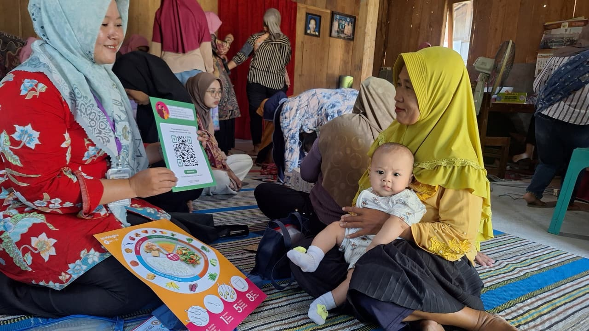

Selamat datang di web resmi
UPTD Puskesmas
Tegowanu
Fasilitas Pelayanan Kesehatan Tingkat Pertama di Jln. Gatot Subroto No. 128, mengutamakan layanan berkualitas demi masyarakat Tegowanu sehat.
Informasi & Layanan Puskesmas
Pilih tombol di bawah untuk melihat profil utama atau mengajukan layanan pengaduan.

UPTD Puskesmas Tegowanu merupakan fasilitas pelayanan kesehatan yang menyelenggarakan upaya kesehatan masyarakat (UKM) dan upaya kesehatan perorangan (UKP) tingkat pertama, dengan lebih mengutamakan upaya promotif dan preventif di wilayah kerjanya.
Puskesmas ini berlokasi di Jln. Gatot Subroto No. 128 Desa Tegowanu Kulon, Kecamatan Tegowanu, Kabupaten Grobogan. Wilayah kerja kami mencakup 18 desa dengan luas wilayah 51,67 km² dan membawahi lebih dari 60.139 jiwa penduduk. Kami didukung oleh 82 pegawai yang siap melayani dengan kompetensi dan sepenuh hati.
Visi
“Pelayanan kesehatan menuju masyarakat Tegowanu sehat”
Misi
“Mewujudkan pelayanan kesehatan yang bermutu sehingga tercapai derajat kesehatan masyarakat yang optimal dengan mendorong kemandirian masyarakat untuk berperilaku hidup bersih dan sehat"
Layanan Kami
Dua upaya utama yang kami jalankan, didukung lima klaster pelayanan sesuai siklus hidup masyarakat.
Upaya Kesehatan Perorangan (UKP)
Pelayanan untuk peningkatan, pencegahan, penyembuhan penyakit, serta pemulihan kesehatan perseorangan di tingkat primer.
Upaya Kesehatan Masyarakat (UKM)
Pemberdayaan masyarakat untuk mencegah penyakit dan meningkatkan derajat kesehatan secara menyeluruh.
Manajemen
Pengelolaan pelayanan puskesmas agar berjalan baik dan bermutu.
Ibu & Anak
Pelayanan komprehensif bagi ibu, bayi, balita, remaja, dan anak sekolah.
Usia Produktif & Lansia
Pelayanan preventif dan kuratif bagi kelompok usia produktif dan lanjut usia.
Penyakit Menular
Pencegahan dan penanggulangan proaktif terhadap penyakit menular.
Penunjang Medis
Dukungan seperti Laboratorium, Farmasi, serta program pelayanan khusus.
Galeri Kegiatan
Potret pengabdian dan dedikasi kami kepada masyarakat Tegowanu.


Berita & Kegiatan Puskesmas
Ikuti perkembangan informasi terbaru seputar kesehatan, jadwal kegiatan, dan pengumuman penting.

Posyandu & Imunisasi Bersama Warga
Puskesmas Tegowanu menggelar posyandu guna mengevaluasi capaian program kesehatan balita di desa...

Penyuluhan Pola Hidup Sehat
Tim kesehatan memberikan edukasi manfaat gerakan kecil dan senam pagi...

Pelayanan Kesehatan Berkala Anak Sekolah
Pemeriksaan kesehatan gigi dan umum rutin dilaksanakan langsung ke sekolah-sekolah...
Ada keluhan atau butuh informasi layanan?
Tim kami siap membantu melalui WhatsApp atau formulir pengaduan resmi.